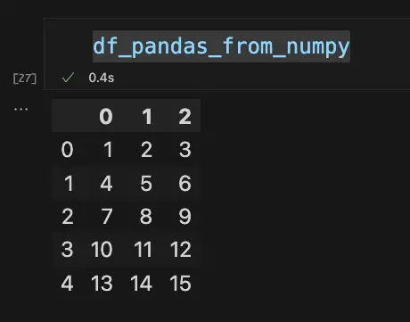
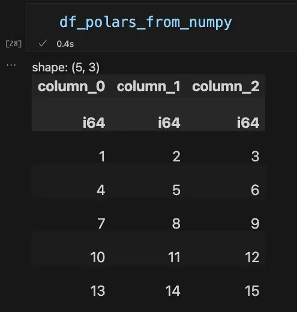

Alternatives to Pandas: Python Polars
Introduction
The Python Polars module (available, for example, through “pip instal polars”) is a serious alternative to Pandas. Like Pandas, Polars exports a DataFrame object that can be thought of as a two-dimensional data container, not unlike a spreadsheet page or the rows of a database table. Also, like Pandas, the data is arranged in columnar format, and each column is a Series object. A Series is a labeled, one-dimensional array with each element having the same data type.
In this article, I wanted to begin by reviewing some of the things I’ve learned about Polars in my recent work. We’ll begin with general “pros and cons,” but we don’t want to leave it at that. One place we can go to understand the differences in more depth is to rework some of the Python Pandas Practice Exercises – this time using Polars. I’ve worked through some of these and wanted to share the results, along with some other research into the overlap between the APIs. Finally, we want to weave in some information from the Polars User Guide’s Coming from Pandas article, which is worth consulting if you’re moving to Polars from Pandas.
Polars Advantages Over Pandas
The Polars module has several advantages over Pandas, and we discussed some of these in our article on Large Data Sets in Python: Pandas and the Alternatives. Since the title gives it away, I suppose it’s not too much of a spoiler to say that Polars uses less memory and processes data more efficiently than Pandas.
After that article was published, we learned that Polars uses Apache Arrow internally (compared to NumPy in the Pandas case). In a separate article on Apache Arrow, we found that Arrow also used less memory and was generally more performant than Pandas. Pandas author Wes McKinney discusses some of the reasons for this in his excellent Apache Arrow and the 10 Things I Hate About Pandas article, especially in the “Getting Closer to the Metal” section.
In addition to being more performant, I believe Polars has a much more intuitive API for selecting data than Pandas. We’ll want to cover this in some depth later in the article.
Pandas Advantages Over Polars
The main advantage that Pandas has over Polars is its huge first-mover advantage. Work on Pandas began in 2008, while work on Polars began twelve years later, in 2020. In the period in between, Pandas became one of the dominant general data analytics libraries in Python and has been the subject of many books, articles, and courses. If I were asked which tool one should learn today, from a technical perspective, I’d recommend Polars, hands down. However, I’d be hard-pressed to recommend that a newcomer ignore Pandas entirely – it’s just too widely used to ignore.
Because Pandas has been in the field longer, it’s probably also true that a much larger ecosystem natively supports it. For example, the Seaborn statistical data visualization library has extensive support for Pandas DataFrames, and I don’t believe anything comparable exists for Polars. That Pandas relies on NumPy may make it marginally better for analyses that take advantage of NumPy’s linear algebra libraries. Then again, Polars DataFrames are also convertible to NumPy arrays, so this advantage may not be great.
Transitioning from Pandas to Polars
Although the Coming from Pandas article we mentioned earlier stresses the differences between Polars and Pandas, we have found considerable overlap between them. The learning curve between them is not steep. In particular, though data selection and indexing are very different, there’s a lot of overlap in the following areas:
How DataFrames can be created or loaded.
Common functions to get basic summary information to describe a DataFrame.
Functions for getting summary or statistical information about a column (Series).
How the DataFrames are displayed (generally speaking).
Moreover, the DataFrame object in Polars interoperates well with the Pandas DataFrame. However, to convert between them, we need PyArrow installed.
We can create a complete environment to explore the differences between Pandas and Polars in either Conda or Pip. Here are the instructions using conda :
# Create and activate an environment with the tools we need
conda create -n polars python=3 jupyterlab seaborn polars pyarrow
conda activate polars
# Launch jupyter lab
jupyter lab
In JupyterLab, we can import some modules we’ll need, using some standard aliases to make our typing easier.
import polars as pl
import pandas as pd
import numpy as np
import seaborn as sns
Creating and Displaying DataFrames and Loading Data from Files
An example of the overlap in creation methods is that both Pandas and Polars DataFrames can be created from NumPy arrays, in exactly the same way. Here we create two DataFrames based on a NumPy array with five rows and three columns:
np_array = np.arange(1,16).reshape(5,3)
df_polars_from_numpy = pl.DataFrame(np_array)
df_pandas_from_numpy = pd.DataFrame(np_array)
By default, Polars, unlike PyArrow, maintains a tabular display format that’s similar to what we get for Pandas. To see how they differ, let’s put the display up side by side:


As we can see, the order of the data is the same (five rows by three columns), but there are a few differences. By default, Polars displays the data type of each column, and the default column names begin with “column_”, vs. raw numbers for Pandas. (Both DataFrame constructors take an optional “columns” array value to override the default).
More important than these cosmetic differences, the Polars DataFrame doesn’t display a default index along the left-hand side. This is not just a display issue: Polars DataFrames dispense with the index altogether, a move that makes sense in light of the fact that in Polars, list-style indexing is deprecated in favor of selecting data with expressions, which we’ll discuss later. If you still want to use square-bracket indexing, in Polars you simply use the zero-based position of the row (i.e., the same as using a default index in Pandas).
Other methods for creating a DataFrame are quite similar in Pandas and Polars. For example, the code for loading this Zillow home data from a remote CSV file is the same in both cases:
url = "https://files.zillowstatic.com/research/public_csvs/zhvi/Metro_zhvi_uc_sfrcondo_tier_0.33_0.67_sm_sa_month.csv"
#Pandas
df_homes_pandas = pd.read_csv(url)
# Polars
df_homes_polars = pl.read_csv(url)
Generally, Pandas has more read methods (twenty in total vs. twelve in Polars), but a few of the most common ones overlap:
read_csv
read_excel
read_json
read_parquet
read_sql
Converting DataFrames
As we mentioned earlier, we can also create Polars DataFrames from Pandas. This is handy when you’re learning the differences between the two APIS, or when you need to load data that otherwise might not be unavailable using Polars alone. For example, we can use the built-in sample datasets in Seaborn that create a Pandas DataFrame, then convert it to Polars. Here’s an example:
# Load the dataset in Pandas
df_pandas_penguins = sns.load_dataset('penguins')
# Convert the Pandas DataFrame Polars. Note that for this line to work, PyArrow must also be installed
df_polars_penguins = pl.DataFrame(df_pandas_penguins)
Given a Polars DataFrame, you can also revert this operation, returning a Pandas DataFrame using the to_pandas method.
still_more_pandas_penguins = df_polars_penguins.to_pandas()
Given the state of the polar ice recently, that’s probably too many penguins, but let’s not worry too much about that for now.
Pandas and Polars can also convert DataFrames to NumPy arrays or Python dictionaries (to_numpy and to_dict, respectively) though the resulting data structures may differ.
Getting Basic Information About a DataFrame
Many popular methods and properties we use to discover basic information about a DataFrame have the same names in Pandas and Polars. For example, both Pandas and Polars DataFrames support the following methods:
shapedtypesdescribecolumnsheadtail
In some cases, the results are somewhat different. For example, describe returns slightly different information, and the columns property contains an Index object in Pandas, but a simple list of strings in Polars. However, from the point of view of transitioning from one library to another, these results don’t cause a user too much difficulty.
General Comparison and Overlap
One of the joys of working with Python is that you can easily get information about any object in the language. By filtering out the methods that start with an underscore and converting the resulting list to a set, we can easily compare the public API of two objects.
We can use this technique to determine which methods or properties have the same name in the Pandas and Polars DataFrame objects.
api_pandas = [name for name in dir(pd.DataFrame) if not name.startswith("_")]
api_polars = [name for name in dir(pl.DataFrame) if not name.startswith("_")]
common = set(api_pandas).intersection(set(api_polars))
print(common)
print(len(common))
Output:
{'min', 'columns', 'unstack', 'head', 'drop', 'pivot', 'rename', 'sample', 'transpose', 'pipe', 'describe', 'std', 'shape', 'quantile', 'product', 'explode', 'sum', 'to_dict', 'mean', 'groupby', 'apply', 'shift', 'median', 'join', 'replace', 'iterrows', 'var', 'melt', 'dtypes', 'to_numpy', 'interpolate', 'max', 'filter', 'tail'}
34
If we use the same technique to compare the single-column Series objects, we get more methods returned: fifty-eight instead of thirty-four. Many of these are aggregate or statistical methods such as min , max, sum, median, mean, etc.
Selecting Data In Polars
Selecting data is one area in which Polars and Pandas are very different. Though Pandas experts may disagree with me, I have to admit that I have always found Pandas approach to selecting data to be quirky and difficult to remember. For example, to use “methods” like loc and iloc, one does not call them as though they were methods without the scare quotes, one uses indexing operators (square brackets).
One of the practice questions (currently #31) from the Pandas example set mentioned earlier illustrates this issue. Given Seaborn’s diamonds dataset, diamonds = sns.load_dataset('diamonds'), here’s how you’d select the first ten rows of the price and carat columns:
subset = diamonds.loc[0:9, ['price', 'carat']]
subset
Output:
price carat
0 326 0.23
1 326 0.21
2 327 0.23
3 334 0.29
4 335 0.31
5 336 0.24
6 336 0.24
7 337 0.26
8 337 0.22
9 338 0.23
To get that, once again, we indexed loc with the rows first as a slice, then with the column values we want in a list, all of that in diamonds.loc, which isn’t even a proper function, it’s a _LocationIndexer object, which can be accessed by labels or a boolean array, where you have to build the boolean array separately, and oh my gosh, my head hurts. Seriously.
Here’s how the same code might look using Polars’ expression syntax:
diamonds_polars = pl.DataFrame(diamonds)
subset = diamonds_polars.select(['price', 'carat']).head(10)
subset
Of course, when selecting data, a much more common use case than looking at the first N rows is selecting rows based on some condition. For example, in the Diamonds data set, five diamonds cost more than $18,800. Let’s select the price, carat, and cut values for these five, first in Pandas:
diamonds.loc[diamonds["price"] > 18800, ['price', 'carat', 'cut']]
In Polars we would do it this way:
diamonds_polars.select(['price', 'carat', 'cut']).filter(pl.col("price") > 18800)
Although loc may look a little more reasonable in this case, I prefer the two simple Polars over the Pandas case where there’s a single function with a difficult-to-remember syntax. Chaining select plus filter is reminiscent of how one builds a SQL statement using SELECT and WHERE. (Editors note: in fairness, here, we should point out that Pandas does feature alternative ways to do this query, as Bashir Alam recently covered in his excellent Selecting Data in Pandas article. However, I’m not sure that having so many alternatives for data selection counts as a feature, rather than an accrual over time).
In the end, though, the syntactical difference is probably a matter of taste. However, the expression syntax used here in Polars has other advantages. For these, it’s worth quoting the Polars User Guide at some length:
We strongly recommend selecting data with expressions for almost all use cases. Square bracket indexing is perhaps useful when doing exploratory data analysis in a terminal or notebook when you just want a quick look at a subset of data.
For all other use cases we recommend using expressions because:
expressions can be parallelized
the expression approach can be used in lazy and eager mode while the indexing approach can only be used in eager mode
in lazy mode the query optimizer can optimize expressions
https://pola-rs.github.io/polars-book/user-guide/howcani/selecting_data/selecting_data_intro.html
Even for a relatively small DataFrame such as the diamonds (with 53,940 rows), the Polars expressions version performs better than Python loc, even if we set the index to the “price” in the case of Pandas.
Closing Thoughts
The Polars library boasts many advantages over Pandas. Based on Apache Arrow and with built-in support for parallelization in most cases, Polars has outperformed Pandas in terms of processing speed for every operation I have tried. Moreover, because the object and method names of the two libraries overlap so much, the learning curve for Polars for anyone acquainted with Pandas is not steep.
That said, Pandas won’t be going anywhere any time soon. It still enjoys a huge ecosystem of third-party tools and will be around for many years, so it’s worth learning about Pandas even if Polars and Apache Arrow point to the future.